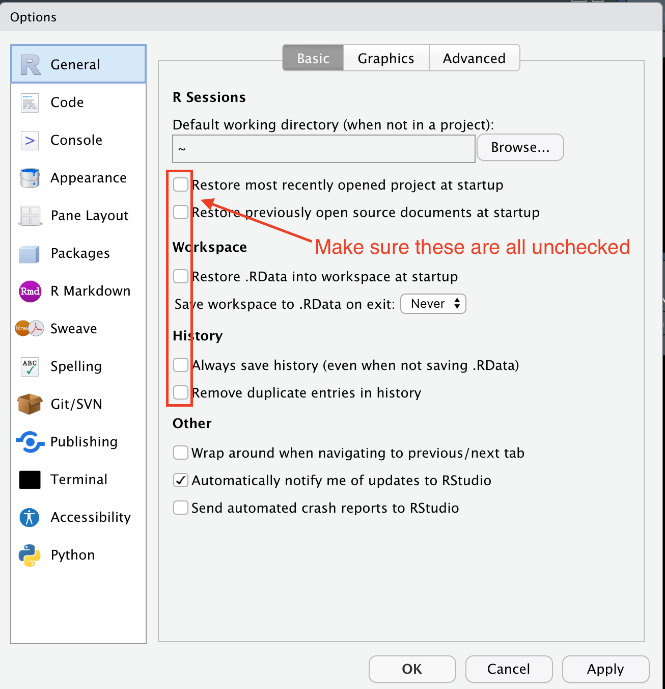
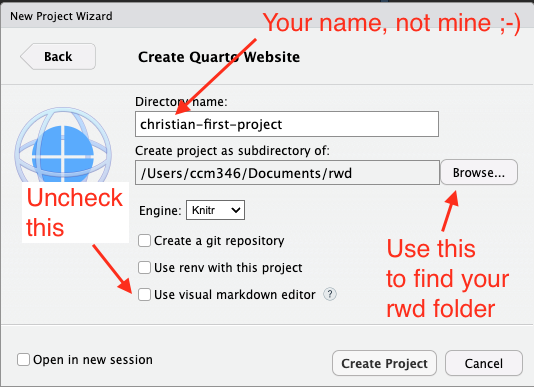
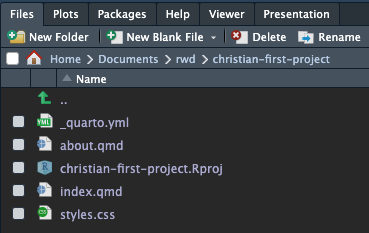
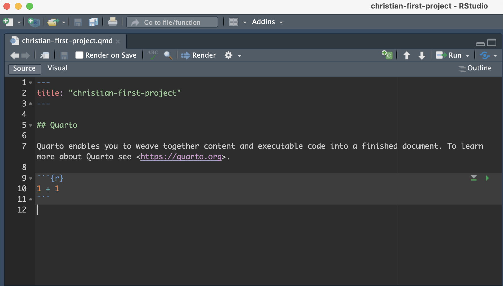
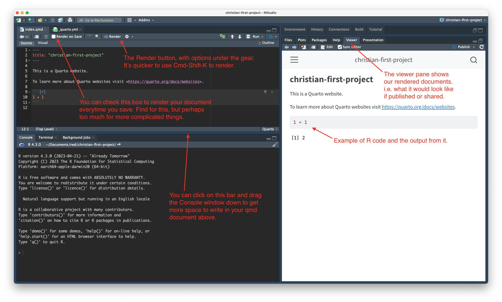
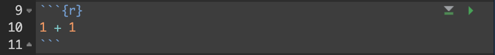
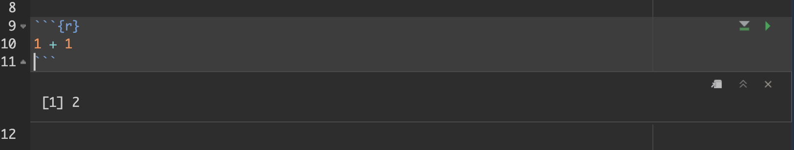
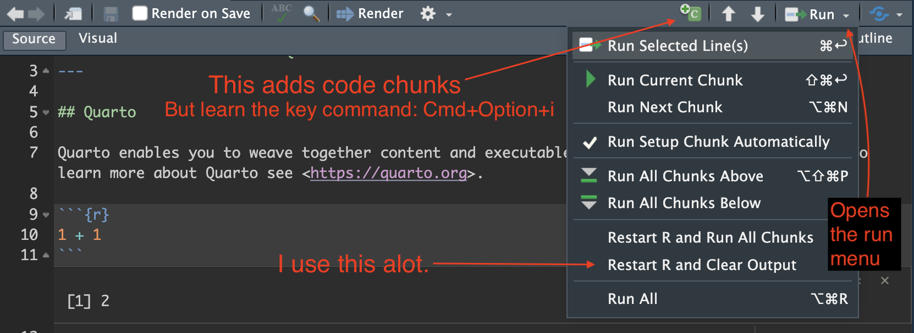
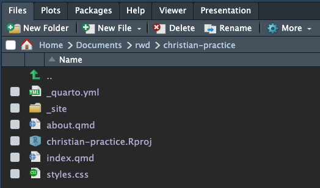

# update 57 to your actual age
age <- 57
(age - 7) * 22 Introduction to R
2.1 About Quarto, R and scripted journalism
Before we dive into RStudio and programming and all that, I want to show you where we are heading, so you can “visualize success”. As I wrote in the book intro, I’m a believer in Scripted Journalism … data journalism that is repeatable, transparent and annotated. As such, the whole purpose of this book is to train you to create documents to share your work.
The best way to explain this is to show you an example.
- Go to this link in a new browser window: Major League Soccer salaries.
This is a website with all the code from a data journalism project. If you click on the navigation link for Cleaning you can read where the data come from and see all the steps I went through – with code and explanation – to process the data so I could work with it. And in the Analysis 2024 notebook you’ll see I set out with some questions for the data, and then I wrote the code to find my answers. Along with the way I wrote explanations of how and why I did what I did.

This website was created using Quarto and R, and the tool I used to write it was the RStudio IDE. Here’s the crazy part: I didn’t have to write any HTML code, I just wrote my thoughts in text and my code in R. With a few short lines of configuration and a two-word command quarto publish I was able to publish my work on the Internet for free.
Keep this in mind:
- We can also easily publish the same work in other formats, like PDF, Word or even a slide show.
- We can also choose NOT to “publish” our work. We don’t have to share our work on the internet, we are just ready if we want to.
Creating shareable work is our goal for every project. Let’s get started.
2.2 RStudio tour
Warning
If you are using the online posit.cloud version of RStudio, then some steps have to be done differently, mainly in dealing with project creation and exporting. I’ll try to note when I’m aware of differences, but may not go into great detail in the book. Happy to do so in class.
In this case, you need go to your posit.cloud account and then use the blue New Project button to launch a new RStudio project, and then continue below.
When you launch RStudio, you’ll get a screen that looks like this (but without the pretty arrows):

2.3 Updating preferences
There are some preferences in RStudio that I would like you to change. By default, the program wants to save the state of your work (all the variables and such) when you close a project, but that is typically not good practice. We’ll change that.
- Go to the Tools menu and choose Global Options.
- Under the General tab, uncheck the first four boxes.
- On the option “Save Workspace to .Rdata on exit”, change that to Never.
- Click Apply to save the change (but don’t close the box yet).

Next we will set some values in the Code pane.
- On the left options, click on the Code pane.
- Check the box for Use native pipe operator, |>.
- Click OK to save and close the box.

We’ll get into why we did this part later.
2.4 The R Package environment
R is an open-source language, which means that other programmers can contribute to how it works. It is what makes R beautiful.
What happens is developers will find it difficult to do a certain task, so they will write code that solves that problem and save it into an R “package” so they can use it later. They share that code with the community, and suddenly the R garage has an “ultimate set of tools” that would make Spicoli’s dad proud.
One set of these tools is the tidyverse developed by Hadley Wickham and other developers at Posit. It’s a set of R packages for data science that are designed to work together in similar ways. Prof. Lukito and I are worshipers of the tidyverse worldview and we’ll use these tools extensively. While not required reading, I highly recommend Wickham’s book R for Data Science, which is free.
There are also a series of useful tidyverse cheatsheets that can help you as you use the packages and functions from the tidyverse. We’ll refer to these throughout the course.
We will use these tidyverse packages extensively throughout the course. We’ll install some other packages later when we need them.
2.4.1 How we use packages
I’ll show you how in a sec, but know there are two steps to using an R package:
- Install the package onto your computer by using
install.packages("package_name"). You only have to do this once for each computer, so I usually do it using the R Console instead of in a notebook. - Include the library using
library(package_name). This has to be done for each notebook or script that uses it, so it is usually one of the first things you’ll see in a notebook.
Note
We use “quotes” around the package name when we are installing, but we DON’T need quotes when we load the library.
2.4.2 Install some packages
We need to install some packages before we can go further. To do this, we will use the Console, which we haven’t talked about much yet.

- Use the image above to orient yourself to the R Console and Terminal. (But note the code we use is a little different.)
- Copy the code below and paste it into the Console, then hit Return.
install.packages(c("quarto", "rmarkdown", "tidyverse", "janitor"))You’ll see a bunch of response fly by in the Console. It’s probably all fine unless it ends the last response with an error.
If you are using the RStudio IDE app on your computer, you only have to use install.packages() on each package once. However, if you are using the online posit.cloud version of RStudio, you’ll have to do this for each new project because each project is a new virtual computer. I’ve included a posit.cloud cheetsheet here
OK, we’re done with all the computer setup. Let’s get to work.
2.5 Starting a new Quarto Website
Important
This is a case where posit.cloud differs greatly. See the posit.cloud Appendix to see how to build a new Quarto Website project.
When we work in RStudio, we will create “Projects” to hold all the files related to one another. This sets the “working directory”, which is a sort of home base for the project.
- In the icon list at the top of your program, click on the second button that is a hexagon with a green
+Rsign. - That brings up a box to create the project with several options. You want New Directory in this case.
- For Project Type, choose Quarto Website.
- Next, for the Directory name, choose a new name for your project folder. For this project, use “firstname-first-project” but use YOUR firstname.
- For the subdirectory, you want to use the Browse button to find your
rwdfolder we created earlier.
I want you to be anal retentive about naming your folders. It’s a good programming habit.
- Use lowercase characters.
- Don’t use spaces. Use dashes.
- For this class, start with your first name.

When you hit Create Project, your RStudio window will refresh and two things will happen:
- You’ll see a number of files listed in your Files window.
- A new document window will open on the left.
2.5.1 The files pane

Let’s walk through the files created and explain what they are in order of importance.
- The
_quarto.ymlfile is a YAML configuration file for your project. This allows us to set publishing rules for our Quarto project. We might not get too much into all the options, but you can read more about it in the Quarto Guide if you like. - The
index.qmdfile is a Quarto document that makes the “home page” of your website. In this book you’ll use the index to describe your project and record other important information related to it. Each Quarto file you create can become a new page in your website, and they all end in.qmd, which stands for Quarto Markdown. (We might also encounter and edit.Rmdfiles, which are very similar, but just a little less awesome.) Theabout.qmdfile is another Quarto document created as a placeholder. We’ll usually rename/reuse that or delete it. - The
christian-first-project.Rprojfile is your Project file. It sets the working directory or what is essentially “home base” for your project. When you go to open your project again, this is the file you will open. styles.cssis file where you can assert extra control on your website. We won’t use it.- The
about.qmdfiles is another Quarto document created as an example for you. We’ll rarely use those after today.
The big thing to remember is this: Most of our work is done in files with the .qmd suffix.
2.6 The Quarto document
The document that opened on the left is our Quarto document where we will do our work. The Quarto document is a method of authoring programming documents where the result can be output in a multiple formats: As HTML, PDFs, slideshows, books, etc. In fact, this very book you are reading is written in R using Quarto.

I could wax poetic about the birth of Quarto and the evolution of what came before it, but you won’t really care. Let’s break this down to what you need to know:
- These documents allow us to weave together our thoughts and our code. We’ll use Markdown to record our thoughts, and R to write our code.
- We write the document and we run the code to see the results, but all the while we are creating documents that we will be rendered to share with others. Our goal with these documents is to explain to an “audience” what we are doing with our data analysis. Often our most important audience is our future self.
Think of Render like exporting or publishing a pretty version of your work.
2.6.1 Render the document
Let’s see what this basic document looks like when when we Render it.
- In the toolbar of the document you’ll see a blue arrow with Render after it.
- Click on that button or word.
What this should do is open up the Console below the document and you’ll see a bunch of feedback, but on the right side of RStudio. You should end up with the Viewer pane that shows your document. Here is a tour of sorts:

For the posit.cloud users, this will launch in a new web browser window. The gear next to the Render button has the option to view previews in a new browser Window or the RStudio Viewer pane.
2.6.2 The metadata
The top of our document has what we call the metadata of our document written in YAML. These are commands to control the output of our document. Right now it only has the title of our document.
---
title: "christian-first-project"
---When we created our project, RStudio added the name of our folder here, which kinda sucks because that is not what the title is for. It should describe a title for your project like the top of a Microsoft Word or Google Docs document.
- Edit the text inside the quotes to be more like a title you would find in a Word or Google Doc document, like below, but with your name:
---
title: "Christian's First Quarto project"
---- Re-render the document so you can see the updates. (You can click on the Render button or do Cmd-Shift-K to update it.)
2.6.3 R code chunks
The next bit of our document shows an R chunk:

This is where we write and execute our programming code. Let’s break down parts of this:
- The three tick marks ` at the beginning and end indicate where the code chunk starts and ends.
- The
{r}part notes that this is R code. (Quarto supports other languages like{python}, but we’ll stick with R.) - The
1 + 1part is the code. In this case, it is some basic math. We do cooler stuff later. - The green triangle that points to the right will run all the code in this chunk.
- The gray triangle that points down with the green bar will run all the code above this chunk.
Let’s run this chunk of code to see what happens.
- Click on the green triangle.

Doing this executes the code that is in the R block and it will print the result to your document below the chunk. You might have noticed something similar when you rendered your document earlier.
Important
There are about five keyboard commands that I will implore you to learn. Here are the first three. Remember if you are on a PC use Cntl instead of Cmd.
- Cmd+option+i will insert a code block.
- Cmd+Return will run a single line (or selection) of code within a code block.
- Cmd+Shift+Return will run a whole code chunk.
2.7 Let’s do some data analysis
Remember the goal of this class is to use data analysis to make sense of the world and then explain to others what we are doing. There are multiple parts to this process:
- What are we thinking? What is our goal?
- Our code that gets us those answer.
- Our thoughts about the results, if any.
Today we will explore the socially-acceptable age to date someone older or younger than ourselves.
I’ll give you an example of this, starting with what we are thinking.
2.7.1 Use Markdown to describe thoughts, goals
- Copy the text below. Note you can use the copy-clipboard button in the book if you roll your cursor over the code and click on the clipboard icon at the top right.
- Paste the code at the bottom of your notebook.
- Re-render your document to see what it looks like.
## My upper dating age
The following section details the [socially-acceptable maximum age of anyone you should date](https://www.psychologytoday.com/us/blog/meet-catch-and-keep/201405/who-is-too-young-or-too-old-you-date).
The math works like this:
- Take your age
- subtract 7
- Double the resultLet’s walk through this Markdown code. You might bookmark this Markdown basics page so you can refer back to it as you learn.
- The
##line is a “Header 2” headline, meaning it is the second biggest. (The title is an H1/biggest.) The more hashmarks###you add the smaller headline you get. - There is a full blank return between each element, including paragraphs of text. The exception is the bullet list.
- In the first paragraph we have embedded a hyperlink. We put the words we want to show inside square brackets and the URL in parenthesis DIRECTLY after the closing square bracket:
[words to link](https://the_url.org). - Using
-at the beginning of a line creates a bullet list. (You can also use*). Those lines need to be one after another without blank lines.
Note
I should note at this point there is a “Visual” editor where RStudio gives you more formatted look as your editing as it writes Markdown underneath the hood. I want you to use the “Source” editor so you can see and learn the underlying Markdown syntax. All my examples will be written in “Source” mode. After you pass this class, you can use “Visual” mode.
2.7.2 Adding new code chunks
Let’s add a new R chunk to add the code that will calculate the maximum age of someone we should date.
- Add a few blank lines after your Markdown text.
- Use the keyboard command Cmd+Option+i to add an R chunk.
- Your cursor will be inserted into the middle of the chunk. Type or copy this code in the space provided:
- Change the number to your real age.
- With your cursor somewhere in the code block, use the key command Cmd+Shift+Return, which is the key command to RUN ALL LINES of code chunk.
Congratulations! The answer given at the bottom of that code chunk is the upper end age of someone socially acceptable for you to date.
Throwing aside whether the formula is sound, let’s break down the code.
# update 57 to your ageis a comment. It’s a way to explain what is happening in the code without being considered part of the code. We create comments inside code chunks by starting with#. You can also add a comment at the end of a line. Comments will appear in grey text in your code chunks if formatted correctly.age <- 57is assigning a number (57) to an R object/variable called (age). A variable is a placeholder. It can hold numbers, text or even groups of numbers. Variables are key to programming because they allow you to change a value as you go along.- The next part is simple math:
(age - 7) * 2takes the value ofageand subtracts7, then multiplies by2. - When you run it, you get below it the result of the math equation,
[1] 100in my case. That means there was one observation [1], and the value was “100”. For the record, my wife is much younger than 100. Perhaps this formula breaks down when you get older¯\_(ツ)_/¯.
Now you can play with the number assigned to the age variable to test out different ages.
2.7.3 Practice adding code chunks
Now, I want you to add a similar section that calculates the minimum age of someone you should date, but using the formula (age / 2) + 7.
- Add a Markdown headline and text describing what you are doing.
- Use the keyboard command to create a new code chunk.
- Include a comment within the code block that explains you are using the
agevariable already established. - Add the math statement
(age / 2) + 7to the chunk. - Run the chunk and re-render your document.
Try it on your own before you peek here!
# Using age variable from above
(age / 2) + 7Now you know the youngest a person should be that you date. FWIW, we don’t need to recreate the age variable since we already have it. A Quarto document is designed to run from top to bottom so that all the pieces work together.
2.7.4 The toolbar
One last thing to point out in the document window: The toolbar that runs across the top of the document window. The image below explains some of the more useful tools, but you REALLY should learn and use the keyboard commands instead.

2.8 A quick look back at files
We’ve been concentrating on editing the Quarto document, but let’s peek back at the Files pane to note some new files that were created.
- In the window with the viewer, you’ll notice several other tabs: Files, Plots, Packages, etc. Click on the Files tab.

Note there is a new folder there, _site. All your rendered versions to into the folder to make it easy to share or publish them.
With our next project, we’ll create some other folders to store our data and such.
2.9 Publish to quarto.pub
Let’s publish our work to the Internet!!!!
- Go to quartopub.com and sign up for a free account.
- Come back to RStudio and down by the Console, click on the Terminal 1 pane.
- Type in
quarto publishand hit Return on your keyboard.
A bunch of stuff will happen in your Terminal pane. Here is a video showing this:
A couple of things about this the video clip above:
- The first time you run
quarto publish, you’ll be asked to authenticate to quarto.pub, so it will be a little different. - In the last bit of that video, a browser window opens with your website. That’s cool!
You can learn more about Quarto pub here, including how to configure your profile page.
2.10 On your own: Update the About page
Try some things on your own! Go into the about.qmd page and write some things about yourself, like your favorite hobbies. Use the Markdown guide to write headlines, lists and maybe even try an image? (You can use a URL from an image on the web.)
- Re-render your pages
- Re-publish your pages by going back to Terminal and using the
quarto publishcommand.
2.11 Turning in our projects
Note
This is a bit different for posit.cloud users. See below.
The best way to turn in all of those files into Canvas is to compress the project folder into a single .zip file that you can upload to the assignment.
- Make sure all your files are saved and rendered.
- In your computer’s Finder, open the
Documents/rwdfolder. - Follow the directions for your operating system linked below to create a compressed version of your
yourname-final-projectfolder. - Upload the resulting
.zipfile to the assignment for this week in Canvas.
If you later make changes to your R files after you’ve zipped your folder, you’ll need to to zip it again. Make sure you send me the new version (or delete the old one first).
Because we are building “repeatable” code, I’ll be able to download your .zip files, uncompress them, and the re-run them to get the same results.
Well done!
2.11.1 Exporting for posit.cloud
Exporting is a little different for posit.cloud users. You can export your project pretty easily by following the directions in this screenshot:

This will save the .zip file to your downloads folder. Submit that .zip file to Canvas.
2.12 Review of what we’ve learned so far
- You’ve learned about the RStudio IDE and how you write and render R code with it.
- You used
install.packages()to download R packages to your computer. Typically executed from within the Console and only once per computer. We installed a lot of packages including the tidyverse. - You created a Quarto Website and related Quarto documents with code on them.
- You published your work on Quarto Pub to share over the internet.
The Terminal is where you can send commands to your computer using text vs. pointing and clicking through “normal” actions. It’s super powerful and useful, but this is probably the only terminal command we’ll use.↩︎